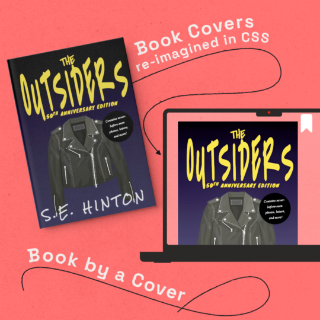
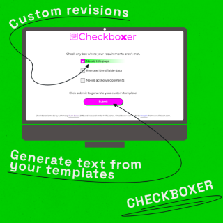
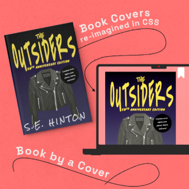
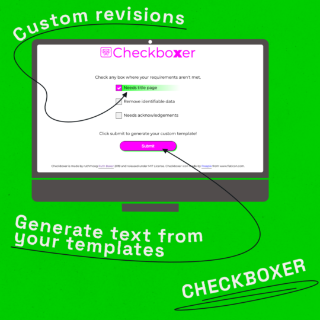
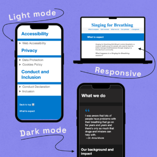
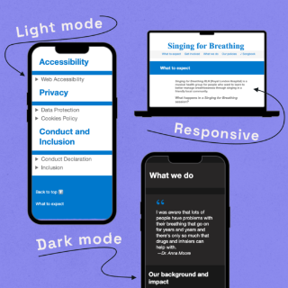

Ruth Baker
🔠I'm a software developer. I’m looking for roles where I can build great software, work with friendly engineers who value knowledge sharing & collaboration, and work hybrid/ London UK/remote.
💬 Pronouns are she/her.
📠Awarded a fellowship at Makers in 2019.
💡 Ask me about TDD, web development, 🐝 bees & wildlife, science publishing, 🯠archery
📫 How to reach me: github /ruthmoog | twitter @ruthmoog | linkedin ruth-baker | dev.to ruthmoog
My values.
I believe in accessibility as a core principle when creating software. My digital community values diversity, collaboration, openness and reflection; its developers build relevant, satisfying software that's easy for everyone to use.
On the web's 30th birthday, to demonstrate my support of the principles for an open web for everyone I signed the World Wide Web Foundation's Contract for the Web. In my capacity as a professional developer, I promise to abide by the ethical principles stated in the Manifesto for Responsible Software Development.
I'm a Green Software practitioner and member of the Green Software Foundation community, whose mission is to create a trusted ecosystem of people, standards, tooling, and best practices for building software.
I volunteer for the Bumblebee Conservation Trust as a Bee Walker. The Trust coordinates a citizen science project where non-scientists (like me!) collect data on the abundance of bee species throughout the UK. Taking part gives me the opportunity to explore the wildlife where I live.
Before I became a developer, I had a decade-long career in STEM publishing. I have a strong background outside of technology as an operations team lead, and a project coordinator for print and digital products.
My Projects.

 



 

My community.
“Ruth has a solid knowledge of Java and its API and helped me solve the problem in a better way.”
“I enjoy breaking problems down, getting to the bottom of an issue and figuring out a way to solve it.”
“Ruthmoog's mentoring sure helped me improve my code quality. She provided a great insight to the solution.”
“Part of the ethos of being a developer is sharing, and coaching is part of that.”